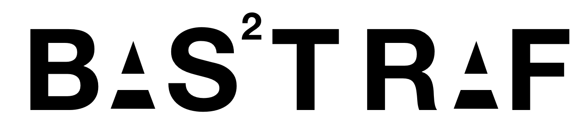

About Bastraf
Bastraf is a group project composed of friends, who came to know each
other after coming to Epita, as they were in the same class. They did not
have an idea of project before forming the group, but they did so because
they thought that even if individually they were not the best, they would
work better with people they like than with total strangers. As they had
already went through a semester together, they knew that they could count
on the others and that once the idea was found, they would all work hard to
transform it into something concrete.

About Logo
Raphael was the one who did the logos. When he first start thinking about
the two logos, (one for the group, one for the game), he wanted something
simple and not flashy, just enough to make everyone understand the goal
of the game. So he wrote down the name EPISCAPE and asked himself
what would give the best comprehension of the idea of the project. He then
thought about a running man and put it at the place of the ‘I’ and since this
man wanted to go out, he put an open door at the end of the world, and
thus, EPISCAPE’s logo was born.
Secondly, for the group’s logo, he took each first letter of our names and
second names, the vowels are like “negatives” and both S for “Sole” and
“Silverio” are regrouped and the S is squared to mean that there are two ‘S’,
it gives BAS 2 TRAF and you can see the logo above.
About Members
Raphael Silverio
Raphaël has chosen during his last high-school year, to make ISN (Informat-
ical and Numerical Sciences) so he already made a project (creating an IA
able to drive on a circuit on Unity) with Python so he already has some
experiences in programming. He participated to already 5 real-life escape
game so he has some experience and can help the group on the conception
of the project.
Augustin Brites
Augustin chose, as Raphaël, the ISN course. He had a project in Arduino of
a robot which is following a black line on the ground. It was a great project
with 3 others friend within 4 months. I hope I will bring a little bit of my
experience to the group.
Antoine Sole
I have started to take interest in programmation when i
was in class of ’3ième’. But at that time i did not have the motivation to
seriously start learning it and since then i only made small scale personal
project until last year where i had to realise a game with my specialization
ISN and my class of SI. At that time i realised that it could be very difficult to work in group and that a lot of communication was needed. I wish that, thanks to my previous experience i can help this group to work together without issues.
Gaurav Lokwani
I got interest in Computer Science when I was in class 10th and when I completed my 12th grade I decided to join EPITA which is one of the well known colleges for Computer Science and now I further decide to continue in this field. I am particularly amused by Cyber Security and I decide to pursue my career in this area.